Er zijn avonden waarop één bord eten gewoon te weinig mogelijkheden biedt. Je wilt iets krokants, iets romigs, nog een olijf en toch ook even proeven van dat schaaltje aan de overkant. Precies daarvoor zet ik graag tapas op tafel.
Maar welke wijn schenk je bij tapas? Bij knoflookgarnalen past iets anders dan bij gehaktballetjes in tomatensaus. Gelukkig hoef je geen halve wijnwinkel in huis te halen.
Met Sauvignon Blanc, licht houtgerijpte Chardonnay en Rioja Crianza kun je drie smakelijke rondes samenstellen. Hieronder vind je vijf tapasideeën per wijn, met een korte bereidingssuggestie en uitleg over de combinatie.
EERST EVEN PROEVEN
Welke wijn past bij welke tapas?
Begin bij de smaak van het gerecht. Fris en kruidig eten vraagt om iets anders dan een romig hapje of een stevig vleesgerecht.
Dit zijn uitgangspunten om mee te proeven. De fles, de bereiding en je eigen smaak bepalen welke combinatie jouw favoriet wordt.
Fris, groen & levendig
5 tapas bij Sauvignon Blanc
Een droge, frisse Sauvignon Blanc zonder uitgesproken houtinvloed is een fijne partner voor verse kruiden, geitenkaas en lichte visgerechten. Gebruik citroen als accent: het hoeft geen wedstrijd te worden tussen je bord en je glas.
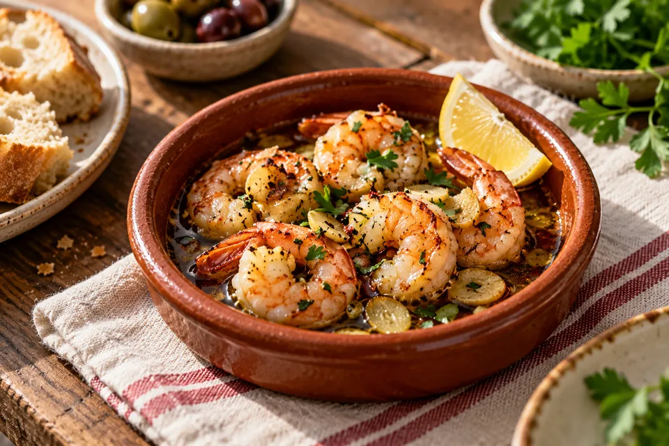
HAPJE 01 / Sauvignon Blanc
Gambas al ajillo met peterselie
Garnalen · knoflook · peterselie
Laat plakjes knoflook zachtjes geuren in olijfolie. Voeg de garnalen toe en bak ze gaar. Werk af met peterselie, citroenrasp en een klein beetje chili. Serveer met brood om de olie mee op te dippen.
De frisse wijn biedt tegenwicht aan de olie en sluit aan bij het citrusaccent. Houd de chili bescheiden, zodat de pittigheid niet overheerst.
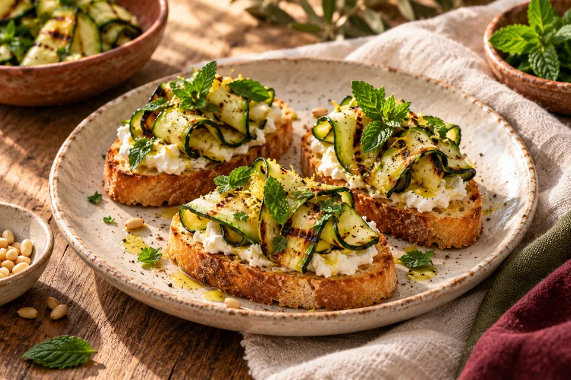
HAPJE 02 / Sauvignon Blanc
Crostini met geitenkaas en courgette
Geitenkaas · courgette · munt
Rooster dunne sneetjes stokbrood. Besmeer ze met zachte geitenkaas en leg er gegrilde courgettelinten op. Maak af met munt en zwarte peper.
Het frisse karakter van de kaas past bij de zuren in de wijn. Courgette en munt geven een groen accent. Laat honing hier achterwege.
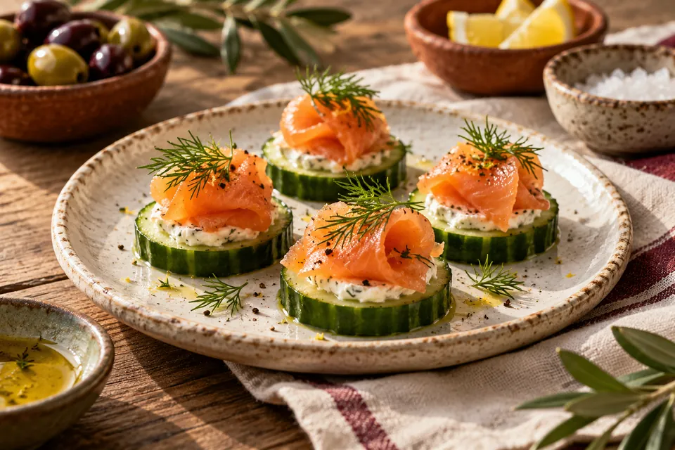
HAPJE 03 / Sauvignon Blanc
Komkommerhapjes met zalm en dille
Komkommer · gerookte zalm · roomkaas
Dep dikke komkommerplakjes droog. Beleg met een beetje roomkaas, gerookte zalm en dille. Meng eventueel citroenrasp door de roomkaas. Bouw de hapjes vlak voor het serveren op.
Frisse wijn houdt de romigheid en het vet van de zalm in balans. Komkommer en dille maken het hapje licht. En het fornuis? Dat mag even uit.
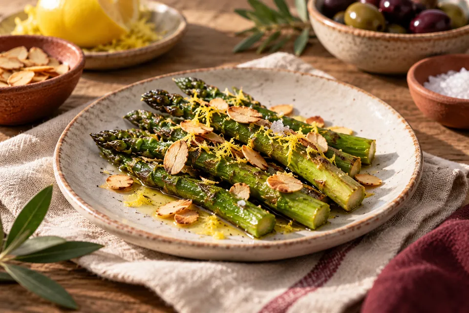
HAPJE 04 / Sauvignon Blanc
Groene asperges met citroen en amandel
Groene asperges · citroen · amandel
Snijd de houtige uiteinden weg en bak de asperges beetgaar. Voeg citroenrasp, enkele druppels citroensap en geroosterd amandelschaafsel toe. Serveer op kleine bordjes.
Het groene karakter van asperges sluit aan bij kruidige Sauvignon Blanc. De amandel geeft een krokante afwisseling zonder het gerecht zwaar te maken.
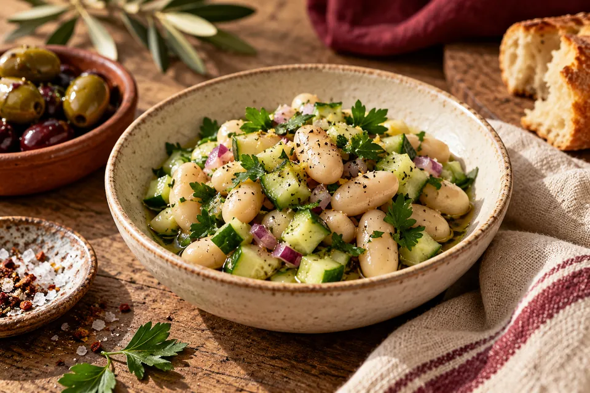
HAPJE 05 / Sauvignon Blanc
Wittebonensalade met verse kruiden
Witte bonen · komkommer · peterselie
Spoel witte bonen uit een pot af en laat uitlekken. Meng met komkommerblokjes, peterselie, eventueel een beetje rode ui, olijfolie en een bescheiden scheutje citroensap.
De bonen geven een zachte basis; kruiden en citroen sluiten aan bij de wijn. Dit gerecht kun je grotendeels vooraf voorbereiden.
Rond, romig & goudbruin
5 tapas bij Chardonnay
Tijd voor de ronde waarin de oven een rol krijgt en niemand bezwaar maakt tegen een beetje boter. Kies een droge, ronde, licht houtgerijpte Chardonnay. Niet iedere Chardonnay smaakt boterig: kijk naar de omschrijving op het etiket.
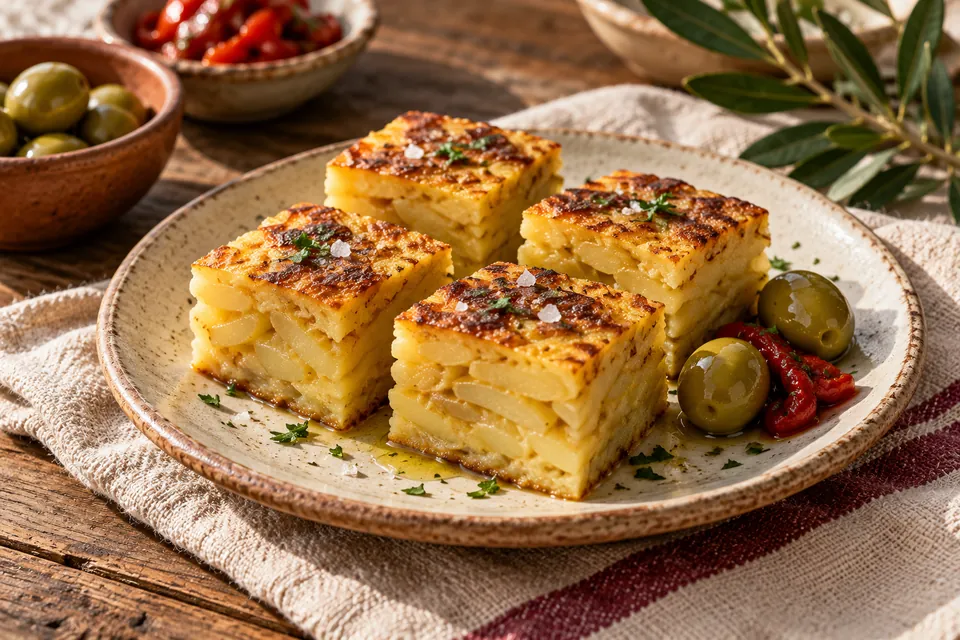
HAPJE 06 / Chardonnay
Mini-tortilla met aardappel en ui
Aardappel · ei · ui
Gaar dunne aardappelschijfjes en ui rustig in olijfolie. Meng met losgeklopt ei en bak de tortilla tot het ei gestold is. Laat even rusten en snijd in blokjes.
Aardappel en ei hebben een zachte, volle structuur die past bij ronde Chardonnay. De zacht gebakken ui voegt een hartig, lichtzoet accent toe.
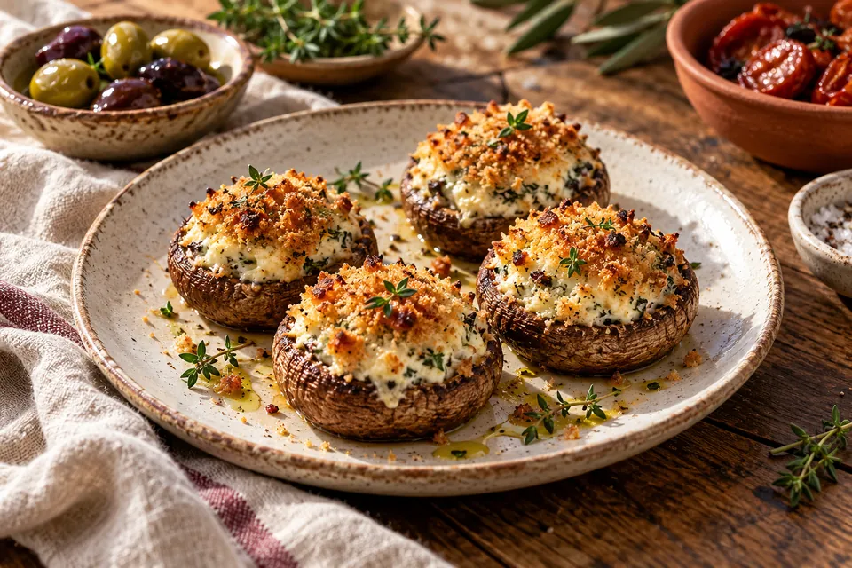
HAPJE 07 / Chardonnay
Gevulde champignons met roomkaas
Champignons · roomkaas · tijm
Hak de champignonsteeltjes fijn en bak ze kort. Meng met roomkaas en tijm. Vul de hoedjes, strooi er broodkruim over en bak in de oven tot de champignons gaar zijn en de bovenkant goudbruin is.
De roomkaas sluit aan bij de ronde wijnstijl. Het geroosterde korstje past bij de subtiele toastachtige aroma’s van licht houtgerijpte Chardonnay.
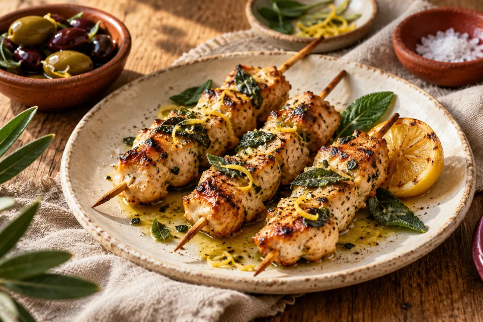
HAPJE 08 / Chardonnay
Kipspiesjes met citroenboter en salie
Kipdijfilet · boter · salie
Snijd de kip in gelijkmatige stukjes, rijg aan spiesjes en bak volledig gaar. Smelt apart wat boter met salie en citroenrasp en bestrijk de spiesjes er licht mee.
Kip en boter vormen een zachte, hartige combinatie die de wijn ruimte geeft. Gebruik vooral citroenrasp; veel sap zou deze ronde onnodig zuur maken.
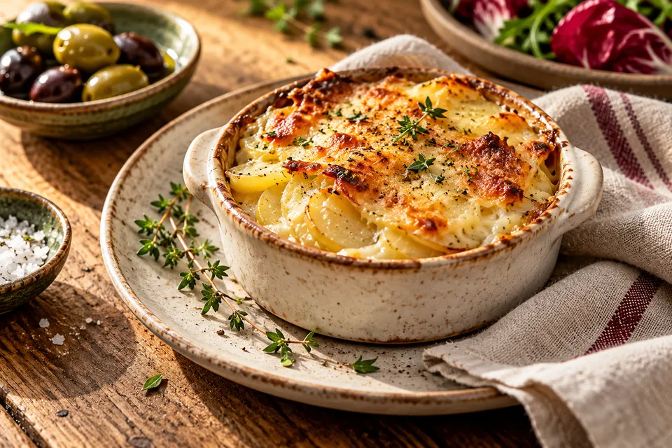
HAPJE 09 / Chardonnay
Kleine aardappelgratins met oude kaas
Aardappel · room · oude kaas
Verdeel dunne aardappelschijfjes over kleine ovenschaaltjes. Voeg room, een beetje knoflook en geraspte oude kaas toe. Bak tot de aardappels zacht zijn en de bovenkant goudbruin is.
De volle textuur past bij ronde Chardonnay. Kies wel een wijn met voldoende frisheid. Houd de porties klein: er komen nog meer schaaltjes aan.
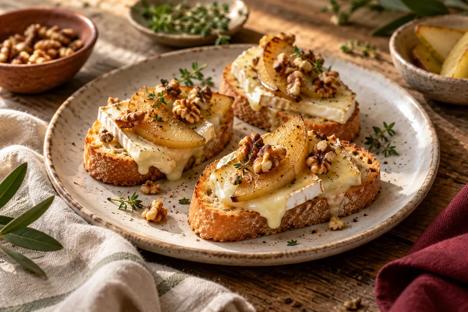
HAPJE 10 / Chardonnay
Crostini met peer, brie en walnoot
Stevige peer · brie · walnoot
Bak dunne plakjes stevige peer kort in boter. Leg ze met brie op geroosterd brood en warm kort door. Strooi er gehakte walnoot over.
Brie geeft romigheid, walnoot een nootachtig accent en peer wat fruit. Voeg geen honing toe en kies geen overrijpe peer: het hapje mag niet te zoet worden.
Fruitig, kruidig & hartig
5 tapas bij Rioja Crianza
Voor de laatste ronde komen de krachtigere smaken op tafel. Rioja is een wijnstreek en Crianza een rijpingsaanduiding, geen druivensoort. Kies een fruitige, toegankelijke rode Rioja met gematigde houtinvloed.
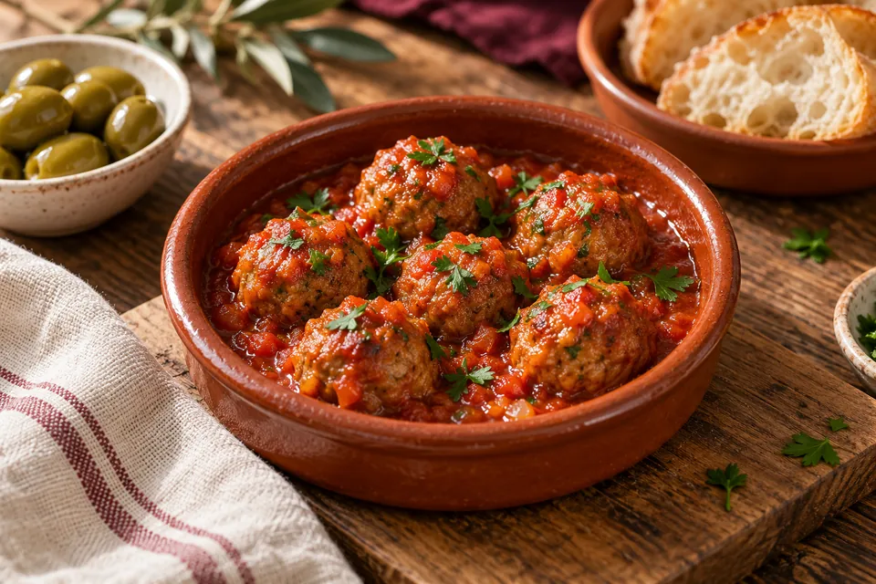
HAPJE 11 / Rioja Crianza
Albóndigas in milde tomatensaus
Gehakt · tomaat · gerookte paprika
Maak kleine balletjes van gehakt, paneermeel, ei en peterselie. Bak rondom bruin en laat volledig garen in een milde tomatensaus met knoflook en een beetje gerookt paprikapoeder.
Het vlees geeft stevigheid tegenover rode wijn. Een beetje gerookte paprika sluit aan bij kruidige en geroosterde tonen. Zet brood klaar voor de laatste saus.
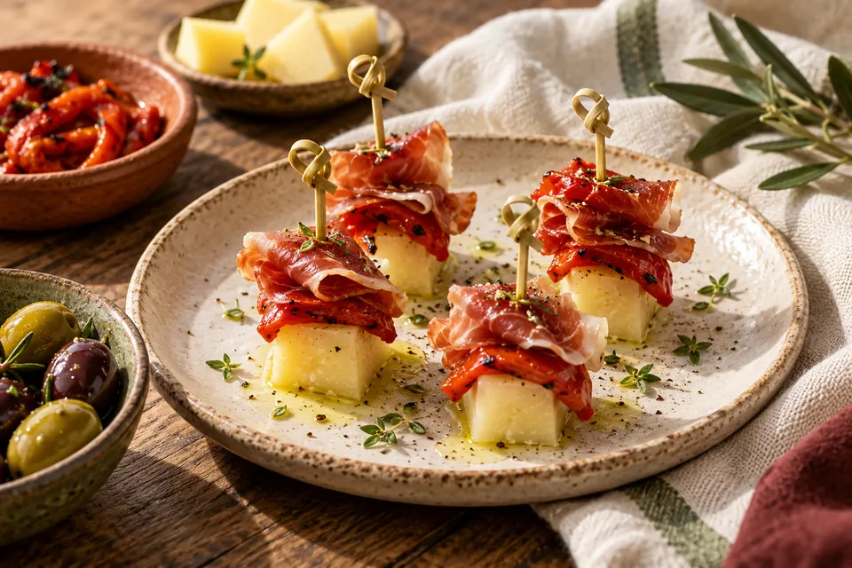
HAPJE 12 / Rioja Crianza
Manchego met serranoham en paprika
Manchego · serranoham · paprika
Laat geroosterde paprika uit een pot uitlekken en dep droog. Rijg een blokje Manchego, een los gevouwen plakje serranoham en een stukje paprika aan een prikker.
Kaas en ham bieden hartigheid en vet; paprika geeft een zacht accent. Een stevig hapje voor fruitige Rioja, zonder dat er een pan aan te pas komt.
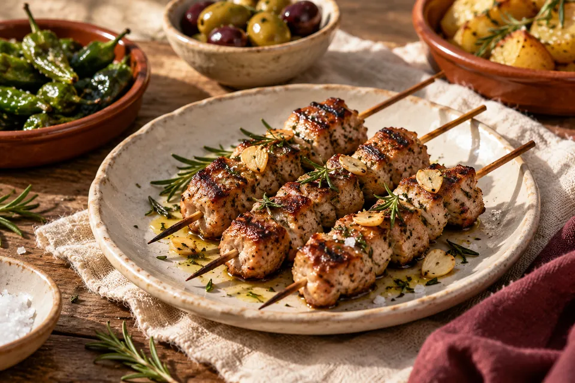
HAPJE 13 / Rioja Crianza
Varkenshaasspiesjes met rozemarijn
Varkenshaas · rozemarijn · knoflook
Snijd het vlees in gelijkmatige blokjes en meng met olijfolie, rozemarijn en knoflook. Rijg aan spiesjes, bak gaar en laat kort rusten voor het serveren.
De gebakken buitenkant en kruidige rozemarijn passen bij de hartige kant van Rioja. Gebruik rozemarijn met mate: één takje kan al behoorlijk aanwezig zijn.
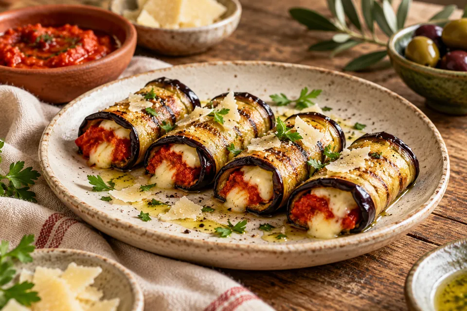
HAPJE 14 / Rioja Crianza
Auberginerolletjes met Manchego
Aubergine · Manchego · paprikacrème
Snijd aubergine in dunne lange plakken en gril ze zacht. Pureer uitgelekte geroosterde paprika met olijfolie. Bestrijk de aubergine dun, voeg kaas toe, rol op en verwarm kort in de oven.
Geroosterde aubergine en kaas geven voldoende intensiteit voor rode wijn. Houd de paprikacrème hartig en voeg geen suiker toe.
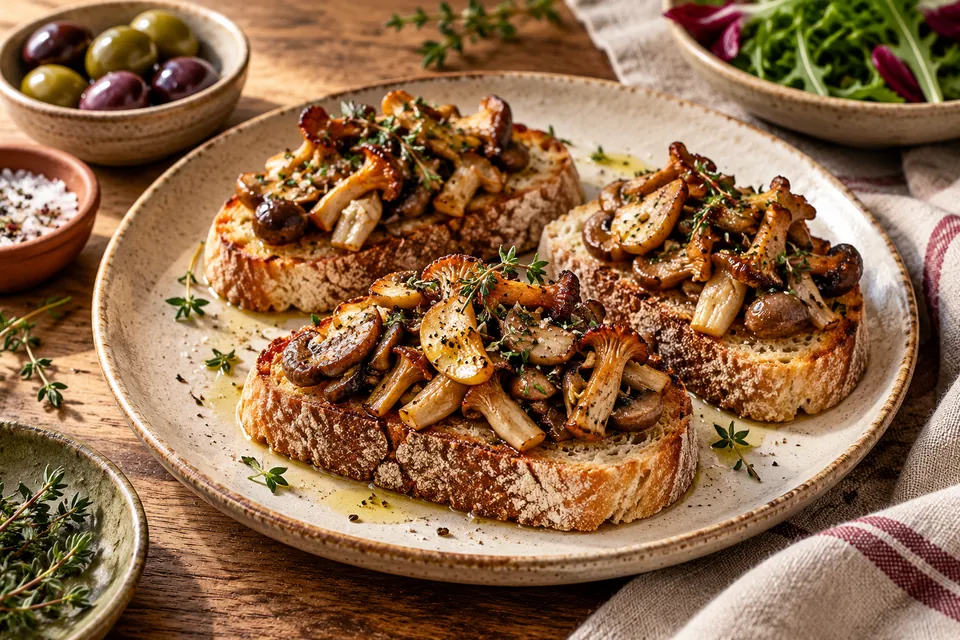
HAPJE 15 / Rioja Crianza
Paddenstoelentoast met tijm
Gemengde paddenstoelen · tijm · brood
Bak paddenstoelen in een ruime, hete pan en geef ze tijd om te kleuren. Voeg knoflook pas later toe. Breng op smaak met tijm, peper en zout en verdeel over geroosterd brood.
De gebakken smaken passen bij de houtinvloed. Kies een soepele, fruitige Rioja: een erg stroeve rode wijn kan bij paddenstoelen minder prettig uitpakken.
MEER TIJD AAN TAFEL
Een tapasavond zonder keukenstress
Vijftien gerechten zijn vijftien mogelijkheden, geen verplicht programma. Kies bijvoorbeeld twee hapjes per wijn en stem de porties af op je gezelschap.
- Begin fris. Knoflookgarnalen en geitenkaascrostini bij Sauvignon Blanc.
- Maak het romig. Mini-tortilla en gevulde champignons bij Chardonnay.
- Sluit hartig af. Albóndigas en auberginerolletjes bij Rioja Crianza.
Maak de gehaktballetjes en tortilla vooraf. Bereid de champignonvulling en auberginerolletjes alvast voor en bewaar bederfelijke onderdelen gekoeld. Bak garnalen vlak voor het eten en beleg crostini op het laatste moment, zodat het brood krokant blijft.
Zet bordjes, servetten en water klaar. Serveer warme gerechten in rondes: dat geeft je gasten iets om naar uit te kijken en jou ruimte op het fornuis.
Proeven mag zonder proefwerk.
Neem een hapje, proef de wijn en kijk wat er verandert. Lijkt de wijn frisser? Komt het fruit beter naar voren? Of vind je het gerecht eigenlijk lekkerder bij de vorige wijn?
Dat laatste mag gewoon. Een geslaagde tapasavond wordt niet beoordeeld op het aantal juiste proefnotities. Begin fris, bouw op naar romig en eindig hartig. De rest ontdek je samen.
Kies je eerste hapje ↑Bronnen & verantwoording
De gerechtcombinaties zijn redactionele suggesties; geen verslag van geteste recepten. De bereidingen zijn korte ideeën, geen recepten met afgewogen hoeveelheden. Alle afbeeldingen zijn AI-gegenereerde sfeerillustraties en kunnen in garnering afwijken.
- Wines of South Africa: Sauvignon Blanc en gerechten
- Westcott: houtgerijpte Chardonnay en foodpairing
- CVNE: stijl en samenstelling van Cune Crianza
Geraadpleegd op 29 oktober 2026. Wijnstijlen verschillen per producent en jaargang.